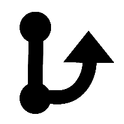

About
Git started
Intro
This app aims to be a user-friendly revision control software. It fits people working on their own projects, or that find git overwhelming.
The app uses "git" behind the scene, and is therefore fully compatible and can be used interchangeably together with other git softwares.
Help
Help for the main window is found from the icon.
Instructions for windows that are opened outside the main windown are found at the bottom of each window, and can be read by clicking on the banner :

Start working - drop a folder
Dragging a project's folder onto the app's window makes it available for version control.
If the folder is not prepared (as a git repository), the user is asked to allow the program to initialize the folder for git.
Beginner's workflow
For git first-timers, the workflow would simply be:
- Work on your files
- When finished with some task: write a description in the text area, and press the "Store" button to store a snapshot of your files
- Work on your files
- When finished with some task: write a description in the text area, and press the "Store" button
- ...
The beauty of the revision control is, that you may go back to any snapshot later
Learn more
Clickable icons
- Most things can be clicked :
- These buttons are always visible :
- help
- Show project folder
- Settings dialog
- Steps through the history of older revisions
- Steps towards newer revisions
- "Stash" (hide away) your working files. View it as a temporary Store, which leaves no trace in the revision history
- "Stash pop" (retrieve) your stashed files into our working folder
- Stores the current state of your work as a revision.
- These buttons are visible only when they can be used :
-  Create a new branch from your position
- Merge branch selected from dropdown menu, into current branch.
- Manual updates available to be pulled from remote repository
- Manual push to remote repository (if auto-push disabled in settings)
- Check out an older revison (shown when browsing history)
A little git dictionary
There are a number of concepts that can be described in many ways, both as "git" words, and more generally as concepts for revision control
| Word | Meaning |
|---|---|
| Git | The de facto standard for software revision control |
| Snapshot | A version of all your project files, freezed to exactly this state forever |
| Project folder | A location for storing the files. See "Repository" below |
| Project folder | A location for storing the files. See "Repository" below |
| Repository | A location for storing the files. See "Project folder" above |
| Local repository | A folder on your computer which has been assigned for version control. In Pragma-git, you drop the folder onto the main window. |
| Remote repository | A location normally on another computer. Git can send data to (push) and retrieve data from (pull) the remote repository |
| Initialize | A project folder has to be initialized to become a git repository. This places a hidden folder ".git" in your project folder, which keeps track of all revisions. Do not delete this folder!! |
| Clone | This means making a copy of a remote repository on your local computer. You can then work with this, as your own. One good use case, is if you work on more than one computer. Then, you can clone from a remote repository to your second computer, to get a copy of your complete remote repository. Cloning is only done once, after that you work with Commit, Push, Pull operations, or in Pragma-git, with the "Store"-button and Pull. |
| Commit | The "git" word for storing a snaphshot of your work, with a descriptive name. |
| Add, Commit | In git, storing a snapshot is a two step procedure: 1) select files and 2) commit the files, see above |
| Add, Commit, Push | The "git" way to store a snapshot in your local repository, and to send a copy to a remote repository. The "Store"-button in Pragma-git does this. |
| Store | The "Pragma-git" way to (with one button) store a snapshot in a repository, and to send a copy to the remote repository. "Stored", refers to commited in "git language". "Non-stored", "non-commited" and similar phrasing means that there are changed files that should be stored (commited) |
| Branch | You may work on several versions of your project simultaneously, keeping track of them in different branches. For instance, performing something that is experimental, or implementing something which is a side-track from your project can be done in a separate branch. You can create a new branch from where you are, or from a historical snapshot (see section "Log, History", below). You cannot create a new branch if you have changed files that are not stored. If this side-track is successful you may wish to incorporate that into the main project -- see "merge", below. |
| Merge | Incorporating changes from one branch into another branch. Git does this very cleverly, so that changes that do not overlap will be combined from both branches. If you are unlucky, the same line of text has been changed differently in both branches. Then, git needs your help to resolve which version you wish to keep -- called to resolve a merge conflict |
| Conflict | See above. A conflict can occur when merging two snapshots from for instance two branches, but also between a remote and a local repository. There are two different types of conflicts: 1) a file was deleted in one of the two places, and 2) a file was changed in the same place on both places. For both this cases, git needs your help to decide on what you wish to do. This process is called "resolving a conflict", and in Pragma-git there is a tool that aids you in doing this |
| Pull | Retrieving the latest snapshot from the remote repository, and merging that with your local project folder. If you work on multiple computers, or are many people in the team, some work may have been performed and stored on the remote repository. "Pull" is a way to update your local project folder to the latest state. It is good practice to do this before you start working on your local project. |
| Push | Send a copy of your snapshots to the remote repository. In Pragma-git, the default is to do a "push" when pressing the "Store" button. This may be turned off in the settings, and then you need to do a manual push when ready to copy to the remote repository. In Pragma-git, you send the data to a remote branch with the same name as your local branch. |
| Stash | Like a clipboard copy, where you can "cut" (and remember) the file changes since the last stored snapshot. A stash takes you back to a clean last-snapshot, and keeps the changes in memory. Sometimes this can be useful. One such occasion is if you forgot to "pull" from the remote repository, before starting to work in your local folder. Doing a "stash", then "pull", and then "stash-pop" would be a workflow to solve such problem. In Pragma-git "stash" works as the computer clipboard's copy command, and can hold only one stash. |
| Stash-pop | Like a clipboard "paste", where you retrieve the stashed (see above) changed files. In Pragma-git "stash" works as the computer clipboard's cut and paste command, and can hold only one stash at a time |
| Log, History | The log (History) shows all stored snapshots. In Pragma-git, you walk down in history with the arrow buttons. You can set your project folder to any snapshot from the history, by doing a "checkout" |
| Checkout | This command sets your project folder to the state it was in at the point in time of the snapshot. You may play with the project in that state, but should be careful not to make any changes. |
| Detached HEAD | A checkout of a snapshot is in a state called "detached HEAD". That means that it does not belong to any branch, and if you make changes, they will be dangling without being easy to retrieve. Pragma-git advice you if this happens. The best way is to create a new branch from the checkout and work from there, and end your work by merging it to another branch. |
Title and status bars
(the top title bar)
displays the name of your current repository (in this example "MyFolder"), and the name of the current branch (in this case "master").
Both the repository, and the branch names can be clicked to cycle through your repositories and branches, respectively.
(the bottom status bar)
shows the number of modified files. In normal mode, it is the difference since the last Store operation. In history mode, it is the change from the previous revision in history.
Clicking on this area opens a list of modified files in a new window.
In this new window, you can see if a file was added, modified or deleted. You may also investigate how the files were changed viewing the differences, and in the normal mode also delete or restore the changed file.
(the bottom status bar)
can show up instead of above status of changed files.
This may happen under special circumstances after a "merge", "pull" or "stash retrieve" action.
What it means is that Pragma-git needs your help to clarify what is your intention with files changed in different ways in two different locations.
Click on this area to open a "conflict resolution window", that guides you through this process.
Store version with short description
When you feel you have reached an important point in your work (or are just afraid you will get lost if you continue) you may store a named revision of the project. The nice thing about the revision control system is, that you can later retrieve your whole project as it was at this point in time. There is no harm to store revisions often.
To store a revision of the changed files, you click in the text field, and type a descriptive text. The Store button becomes active when you start typing. Press this button to store your revision.
Store version with longer description
The description may be more than one line. If you use multiple lines,
the first line is a brief description (like a title). The next line is an empty line.
The following lines contain a more specific description. Example :
My message title
my long description that goes on and on ....
Advanced
Multiple repositories and branches
Repositories : You can have multiple active project folders (repositories), added by drag-and drop as described above. You switch by clicking the name (the first text in the title bar), to change to next project in the list.
Repositories can also be created by cloning from an existing remote repository (see Instructions section, at the settings page ).
Repositories can also be removed from the list in the program, also that from the settings window ).
Branches : You can have multiple branches of your work, that you can switch between. You switch by clicking the name (the second text in the title bar between parentheses), to change to next project in the list.
Branches can be created from the Settings dialog icon , where a new branch can be created from the top of your current branch, or from a checked-out historical commit.
Branching can also be performed with the button (which is available if all working files are stored). With this button, a branch may be created starting from the commit displayed in the main window (the latest Store, or a historical commit)
History, and checkout
Browsing history : As described above, the arrow buttons let you browse back in time.
When you view an old commit, the "Store-button" is changed into a "Checkout" button. Pressing "Checkout" sets the files in the project to the same state as it was when Stored. This is useful if you wish to test your work as it was at this time point. If you don't modify any of the files, you are fine to change branch, and you will be back to where your project was before.
Peculiarity with git : If you, however, change any of the files in a historical checkout, your files will be in a strange state called "detached HEAD"
Detached HEAD branch : The branch-name in the title bar is changed to "HEAD", which in git language is referred to as a "detached HEAD". That means, that once you move to another branch, the detached branch can't be easily found again.
Modified files in HEAD branch : If you have modified any files from this checkout and want to keep your changes, you need to move those changes to another branch.
Not Stored files : The easiest way to do move modified (but not Stored) files from a detached HEAD is :
- Press the stash button
- Click on the branch name (HEAD), until you are at the branch where you wish to add your changes to
- Press the retrieve stash button
Stored files : If you have modified and Stored files originating from a checked-out historical commit (what git calls "from a detached HEAD") :
- Click on the branch name (HEAD)
- A dialog pops up, and asks if you wish to
1) Create a temporary branch, to save the files, or
2) Delete your changes - If you select to 1) create a temporary branch, your work will be saved in a branch named "temp-branch-" followed by a number. Change branch to where you wish the new work to be added, and then click the merge button
Installation
Git : The code relies on the standard installation of git (download link)
Diff and Merge tool : An external Diff and Merge tool needs to be installed. This is done in the settings window. There are numerous such tools to chose from (search internet for : Diff and Merge tool). Some that are listed in the git help are : meld, kdiff3, kompare, tkdiff, xxdiff, emerge, gvimdiff, ecmerge, diffuse, opendiff, p4merge and araxis. Meld exists for Windows, Mac, and Linux, but there are many platform specific that may be equally good, or even suit you better.
Credits
- This program could not have been written without the following input and code
- - NW.js
- - nw-sample-apps examples
- - simple-git
- - generate tables